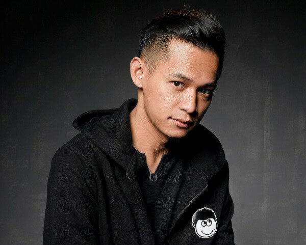

-
Độ Mixi tên thật là Phùng Thanh Độ sinh ngày 12 tháng 9 năm 1989 tại thành phố Cao Bằng, tỉnh Cao Bằng. Là người dân tộc Tày. Anh là con thứ hai trong gia đình có 4 anh em, bố mẹ anh đều làm nhà nước. Từ nhỏ anh đã có đam mê với máy tính. Theo như chia sẻ anh đã tìm tòi và học hỏi photoshop từ năm lớp 8, lớp 9. Anh theo học tại trường Cao đẳng Bách Khoa (sau đó liên thông lên Học viện quản lý giáo dục) ở Hà Nội, nhưng sau đó anh lại làm về mảng du lịch.
-
Theo như chia sẻ của anh, từ nhỏ đến lớn bố anh và anh thân thiết như đôi bạn thân. Sau quãng thời gian anh lên Hà Nội làm việc thì nghe tin từ anh trai rằng bố anh mới tự tử. Chưa hết bàng hoàng thì đến chuyện bố anh có con với một người khác và muốn bỏ gia đình để sống với người phụ nữ khác. Đây chính là cú sốc lớn nhất trong cuộc đời của anh.
-
Trước khi bước chân vào con đường streamer, Độ Mixi là một nhân viên văn phòng và có tình yêu lớn với game. Sau đó, anh bắt đầu stream CS:GO, tựa game bắn súng nổi tiếng của Valve với mục đích tìm niềm vui và thỏa mãn đam mê.
-
Một thời gian sau, anh sáng lập ra đội tuyển thể thao điện tử Refund Gaming, với bộ môn thi đấu chính là PUBG. Ban đầu anh không có quá nhiều kỳ vọng về đội tuyển vì mục đích thành lập đội chỉ là "vui là chính". Tuy nhiên vượt ngoài sự mong đợi, đội tuyển liên tục gặt hái được nhiều thành tích và liên tục gặt hái thành công tại các giải PUBG toàn quốc cũng như quốc tế, trở cái tên lớn, có tiếng tăm trong giới Gaming Việt Nam. Đây là một bước ngoặt lớn và cũng là một thành công đáng kể của Độ Mixi.
-
Độ Mixi kết hôn vào năm 2014 với Nguyễn Quỳnh Trang (Trang Mixi). Sau mối tình kéo dài 3 tháng, hai người quyết định tiến tới hôn nhân. Hai vợ chồng hiện tại đang rất hạnh phúc và có với nhau hai người con trai là Phùng Thanh Tùng (Tùng Sói) và Phùng Tùng Anh (Cáo Nhu Nhi). Năm 2020, anh xây dựng cho mình và gia đình một căn nhà 7 tầng, sau 4 năm bước chân vào ngành streamer.
-
Trong đợt lũ lụt miền Trung Việt Nam năm 2020, Độ Mixi đã tổ chức kêu gọi ủng hộ trong buổi stream tối 16 tháng 10 với số tiền lên đến 1,2 tỷ đồng, trong đó gia đình anh bỏ tiền túi để ủng hộ lên đến 460 triệu đồng.
-
Tháng 1 năm 2021, Độ Mixi hoàn thành dự án xây cầu từ thiện ở quê hương Cao Bằng cùng với sự quyên góp và ủng hộ của người hâm mộ là thành viên của nhóm Bộ tộc MixiGaming. Vào tháng 12 cùng năm, anh tiếp tục gây quỹ nhằm xây trường cho các em nhỏ vùng cao, với số tiền gây quỹ lên tới gần 1,3 tỷ đồng, cùng với cá nhân anh và gia đình cũng bỏ ra khoảng tiền 200 triệu đồng, anh đã hợp tác với Đoàn Thanh niên trường Đại học Kinh tế Quốc dân chọn xã Nậm Ban, huyện Nậm Nhùn, tỉnh Lai Châu là địa điểm xây dựng trường học cho các em nhỏ. 250 triệu đồng nữa được anh cùng Đoàn Thanh niên trường Đại học Kinh tế Quốc dân dùng để xây trường mầm non và nhà tình thương cho người Khơ Mú có hoàn cảnh khó khăn tại xã Chiêu Lưu, huyện Kỳ Sơn, tỉnh Nghệ An và đã hoàn thành vào tháng 7/2022.
Chút xíu về Độ Mixi
Tiểu sử
Sự Nghiêp
Đời Tư
Sản phẩm âm nhạc
| Năm | Tên bài hát | Người thể hiện | Liên kết âm nhạc |
|---|---|---|---|
| 2019 | Tộc ca | Phúc Du, SONBEAT | Play |
| 2020 | Stream đến bao giờ | HuyR, Độ Mixi | Play |
| 2020 | Say em | QNT, Masew ft Refund Band | Play |
| 2021 | Độ Tộc 2 | Masew, Phúc Du, Pháo, Độ Mixi | Play |
Hoạt động từ thiện
ĐỘ Mixi
